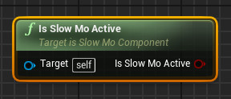

Functions and Events
The following are a list of functions/events that you can use to interact with the SlowMoComponent.
Camera Control
-
Add Control Pitch
Used to rotate the camera up and down.

-
Add Control Yaw
Used to rotate the camera left and right.
Slow Mo Status
-
IsSlowMoActive
Current status of the Slow Mo effect.

@IsSlowMoActive Returns
true if Slow Mo is active, returnsfalse otherwise. -
GetTimedProgress
Current status of the time limited Slow Mo effect.
@IsActive returns
true if time limited slow mo is activated, returnsfalse otherwise.
@Count is the amount of time that has passed since TimedSlowMotion is called, value in seconds.
@Duration is the lifetime of the Slow Mo effect, how long it should last, value in seconds.
@Progress is the percentage of Count/Duration, value ranges from 0 to 1, 1 means the duration is complete.See OnTimedUpdated to access these values from an event.
Modify Settings
-
Reset Settings
Reset the SlowMoComponent settings to its default values (the values at the start of the game).
This function needs to be called before updating the rest of the settings.
If this function is not called beforehand, the previous setups will be carried over to the new one.UpdateSettings need to be called afterwards to finalize the setup. -
Slow Mo Time Settings
Updates the values of Slow Mo Time Settings.
Make sure to callUpdateSettings afterwards to finalize the changes.See Details and Settings for detailed explanation of the parameters.
-
Slow Mo Camera Control
Updates the values of Slow Mo Camera Control.
Make sure to callUpdateSettings afterwards to finalize the changes.See Details and Settings for detailed explanation of the parameters.
-
Slow Mo Visual Effect
Updates the values of Slow Mo Visual Effect.
Make sure to callUpdateSettings afterwards to finalize the changes.See Details and Settings for detailed explanation of the parameters.
-
Slow Mo Visual Effect Override
Updates the values of Slow Mo Visual Effect Override.
Make sure to callUpdateSettings afterwards to finalize the changes.See Details and Settings for detailed explanation of the parameters.
-
Slow Mo SFX
Updates the values of Slow Mo SFX.
Make sure to callUpdateSettings afterwards to finalize the changes.See Details and Settings for detailed explanation of the parameters.
-
Slow Mo Sound Settings
Updates the values of Slow Mo Sound Settings.
Make sure to callUpdateSettings afterwards to finalize the changes.See Details and Settings for detailed explanation of the parameters.
-
Update Settings
Finalize and applies the current Slow Mo settings.
Activation Functions
-
Start Slow Motion
Trigger the start of the Slow Mo effect.
-
Stop Slow Motion
Trigger the end of the Slow Mo effect.
-
Toggle Slow Motion
Turn the Slow Mo status on/off, depending on the value of
IsSlowMoActive -
Timed Slow Motion
Trigger a time limited Slow Mo, effect will automatically stops after the given duration is passed.
@Duration is in seconds.Use either OnTimedUpdate or GetTimedProgress to track the duration status.
Events
-
InputAxis_DefaultPitch
Assign your default camera pitch input here, will be called when Slow Mo is inactive
-
InputAxis_DefaultYaw
Assign your default camera yaw input here, will be called when Slow Mo is inactive
-
OnSlowMoStart
This event will be called when the Slow Mo effect is started.
-
OnSlowMoEnd
This event will be called when the Slow Mo effect has been turned off completely.
-
OnTimedUpdated
This event will be called when the time limited Slow Mo values are updated.
@TimeCount is the amount of time that has passed since TimedSlowMotion is called, value in seconds.
@Duration is the lifetime of the Slow Mo effect, how long it should last, value in seconds.
@Progress is the percentage of TimeCount/Duration, value ranges from 0 to 1, 1 means the duration is complete.These values can also be accessed using the GetTimedProgress function.